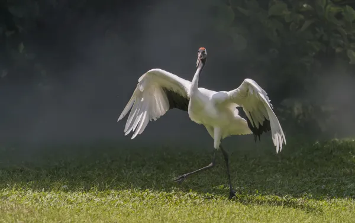

La familia Gruidae, se compone por un grupo de diversas aves conocidas como grullas, dentro de las cuales la grulla de Manchuria (Grus japonensis) es bastante representativa por su hermosura y tamaño. Es nativa de China y Japón, aunque también tiene áreas de reproducción en Mongolia y Rusia. Estas últimas zonas se componen por marismas y pastizales, mientras que en el invierno ocupa humedales, ríos, pastizales húmedos, salinas e incluso estanques artificiales. La grulla de Manchuria se alimenta principalmente de cangrejos, peces y gusanos. Lamentablemente la degradación de los humedales donde habita, ha hecho que la especie se encuentre en la actualidad en peligro de extinción.
El leopardo de las nieves (Panthera uncia) es un felino que pertenece al género Panthera y es una especie nativa de Afganistán, Bután, China, India, Mongolia, Nepal, Pakistán, Federación Rusa, entre otros estados asiáticos. El hábitat se ubica tanto en formaciones montañosas elevadas como del Himalaya y la meseta Tibetana, pero también en zonas mucho más bajas de pastizales montañosos. Las cabras y ovejas son sus principales fuentes de alimento. Se encuentra en estado vulnerable, principalmente por la caza furtiva.